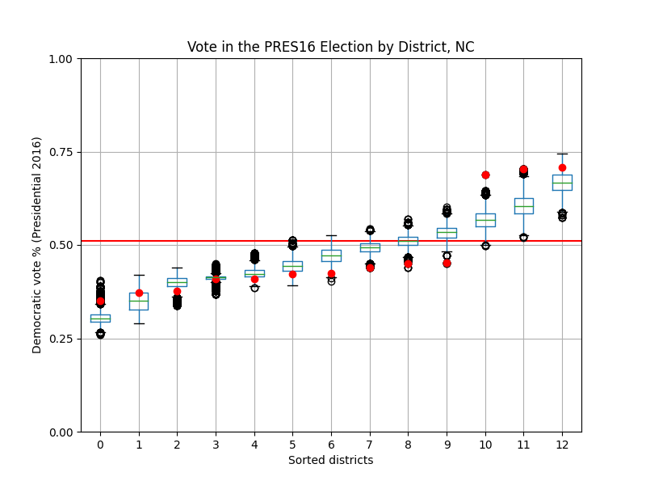

A district is categorized as a minority opportunity district if one of the following conditions are satisfied:
- At least 53% of the district's population is of a racial minority. The additional 3% above the majority-minority baseline is necessary to ensure that minority voters are able to elect a candidate of their choice, even if their turnout is depressed.
- At least 53% of the district's vote share in a 50-50 national environment goes towards Democrats, and minority voters make up a majority of the Democrats' voter base so that they can elect their desired candidate in the primary.
Currently, my algorithm assumes that 80% of minority votes are for Democrats regardless of geographic location (which has a significant effect on how people vote). I based this estimate off of the 2016 national exit polls, in which roughly 79% of minority voters voted for Clinton, and the 2020 national exit polls, in which roughly 74% of minority voters voted for Biden. In the future, this can be improved upon by using an ecological interference model to estimate how individual minority groups voted in each precinct. This will give a much more accurate result than assuming every minority group gives the same share of their votes to Democrats.
Suppose a certain district has perimeter P. Then the Polsby-Popper score for that district is the ratio of the area of that district to the area of a circle that also has perimeter P. See this article for more information.
Unusually low Polsby-Popper scores may be an indicator of long, snaking districts that are highly gerrymandered. However, every score must be taken in context with the rest of the ensemble. For example, a district that includes Michigan's Upper Peninsula naturally has an extremely low Polsby-Popper score, as it needs to take in a lot of small, jagged islands, as well as the rough Upper Peninsula itself.
The probability of a Democrat winning in each district is calculated using two normal distributions overlaid on top of each other. The first normal distribution is centered around the Democratic vote share in the district and has standard deviation 0.03, representing cycle-level differences in the Democratic vote share. The second normal distribution is centered at points drawn from the first normal distribution, has standard deviation 0.02, and represents district-level variations in the Democratic vote share. The expected number of seats won by Democrats is the sum of all of these values throughout each district. This works by Linearity of Expectation, a mathematical property that allows us to ignore the fact that Democratic vote shares in the same election cycle are correlated with each other.
This is essentially a simplified version of the Bayesian hierarchical model used by PlanScore to calculate the probability of each party winning an election in each district. The largest difference is that this simplified version recenters the Democratic vote based on the partisan lean of the overall election (explained in the "Boxplot" section).
e
e
e
e
e
e
Here, the red line denotes the "lean" of the election to adjust for overly strong elections for either party. For presidential elections, this "lean" is the Democratic two-party vote share nationally, while for gubernatorial elections, this "lean" is the state's partisan lean (calculated by averaging the Democratic two-party vote share in the two most recent presidential elections after adjusting for the national vote share) subtracted from Democratic two-party vote share.
All districts displayed are sorted from lowest to highest Democratic vote share. The red dots represent the Democratic vote shares of districts in the initial plan.
One sign of gerrymandering is if there is a suspicious absence of red points close to the red line. Points within 5 percentage points of this red line (or 0.05 on the plot) are considered to be competitive districts, meaning that both parties have a significant chance of winning elections held in this district. Thus, a plan with a lack of these districts means that elections under this plan are largely predetermined: that is, one party's dominance in each district is nearly guaranteed.
We can also compare the red points to the boxplots' positions. If a large proportion of the red points are outliers, especially if they lie further away from the red line than the boxplot does whenever the boxplot is close to the red line, there's a high chance that the starting plan was drawn with partisan interests in mind.
